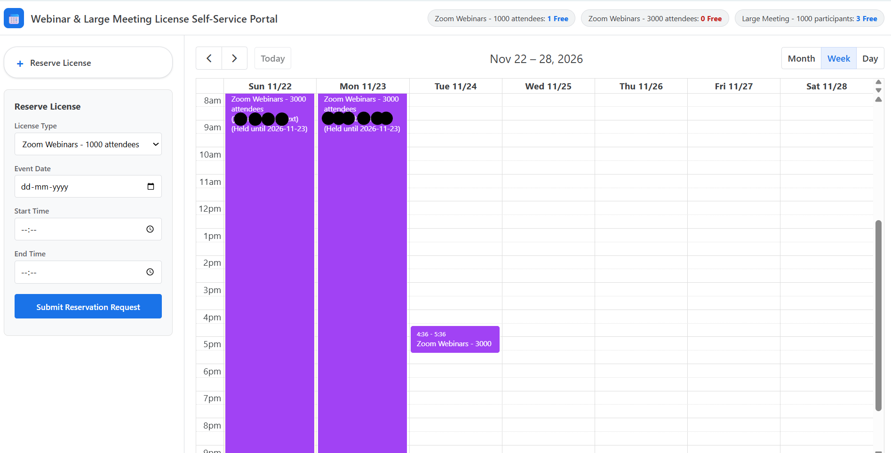

Project Overview
The Webinar & Large Meeting License Self-Service Portal is a web-based internal booking system built using Google Apps Script, Google Sheets, and Zoom APIs. Its primary purpose is to let employees view real-time Zoom add-on license availability and self-reserve Zoom Webinars (1000/3000 attendees) and Large Meeting (1000 participants) licenses without manual back-and-forth with IT.
Business Problem
Managing shared, high-capacity Zoom licenses manually through emails and chat messages created double-booking risks, outdated availability visibility, and missed D-1 (one day prior) license assignment deadlines. Additionally, off-portal manual assignments spanning multiple days needed accurate calendar blocking and revoke-date enforcement so licenses were not rebooked before being reclaimed.
Solution Implemented
A serverless web application was implemented using Google Apps Script (`Code.gs` and `Index.html`) backed by Google Sheets as a lightweight database and audit log. The portal integrates directly with Zoom's Server-to-Server OAuth API for live plan usage counts, Google Calendar for automated D-1 admin blocking, and Google Chat Webhooks for daily assignment alerts.
Key Features
- Interactive 24-Hour Calendar & Quick-Reserve Modal: Uses FullCalendar to display existing bookings and lets users click or drag any time slot to open a pre-filled reservation popup synchronized with the sidebar form.
- Real-Time Zoom Inventory Sync: Fetches live host capacity, active usage, and pending assignments from the Zoom Plans Usage API on page load to display accurate free license badges.
- Concurrency Locking & Multi-Day Overlap Validation: Uses Apps Script LockService and date-range checks (including multi-day revoke dates) to prevent race conditions and block conflicting reservations.
- Automated Admin Google Calendar Blocking (D-1): Automatically creates a calendar event on the admin's Google Calendar starting one day prior to the scheduled event with native popup reminders.
- Daily Google Chat D-1 Reminders: Runs a scheduled morning trigger that scans upcoming reservations for the next day and posts an actionable assignment alert to a Google Chat webhook.
- Security Hardening & Audit Trail: Enforces organizational email domain checks, input sanitization, Script Properties for secret storage, and structured logging in a dedicated Audit_Logs sheet.
Technology Stack
- Google Apps Script (JavaScript): Serverless backend handling API requests, concurrency locks, validation rules, email confirmations, and scheduled triggers.
- HTML5, CSS3 & FullCalendar v6 (CDN): Frontend responsive portal interface providing an interactive 24-hour week/day/month calendar and reservation modals.
- Google Sheets: Structured data store for reservation logs (`Webinar_Requests_Log`), live capacity (`License_Inventory`), and system audit trails (`Audit_Logs`).
- Zoom REST API (Server-to-Server OAuth): Authenticates via account credentials and queries `/v2/accounts/me/plans/usage` to calculate live available licenses.
- Google Workspace Services (CalendarApp, MailApp, UrlFetchApp): Automates admin calendar blocking, confirmation emails, and outbound JSON webhook posts to Google Chat.
My Role & Contribution
I led end-to-end requirement analysis, operational workflow design, Google Workspace configuration (Sheets schema, Script Properties, triggers, and Chat webhooks), and iterative end-to-end testing. Using AI-assisted development, I built, refined, and deployed the hardened Apps Script backend and FullCalendar frontend to align with real-world IT license management workflows.
Workflow
- Step 1 — Live Availability Check: When a user opens the portal, the app queries the Zoom API, updates `License_Inventory`, and displays live free license counts in the top header.
- Step 2 — Slot Selection: The user selects a license type, date, and time via the sidebar form or by clicking directly on the interactive 24-hour calendar.
- Step 3 — Validation & Locking: The backend acquires a script lock, validates the user's domain and inputs, and checks `Webinar_Requests_Log` against both single-day slots and multi-day revoke windows.
- Step 4 — Reservation Logging: If capacity is available, a unique Request ID (`REQ-XXXXXX`) along with D-1 assignment and D+1 revocation dates is written to the log and audit sheets.
- Step 5 — Admin Scheduling & Notifications: The system blocks the admin's Google Calendar starting one day prior, sends email confirmations to the requester and admin, and dispatches a Google Chat alert the day before the event.
Challenges & Solutions
- Stale License Counts on Page Load: Initially, the portal read cached sheet rows rather than live Zoom data; resolved by triggering a cache-busted Zoom API sync with `SpreadsheetApp.flush()` inside `getLicenseStatus()` and accounting for both `usage` and `pending` counts.
- Multi-Day Manual Holds Allowing Early Rebooking: Single-day overlap checks allowed bookings before a multi-day license's revoke date; resolved by updating validation and calendar rendering to block the entire span from Event Date through Revoke Date inclusive.
Business Benefits
- The portal eliminates manual availability checks by giving employees instant self-service visibility into real-time Zoom license capacity while preventing double-bookings across single and multi-day reservations. IT administrators gain automated D-1 calendar blocks, daily Google Chat assignment reminders, and a centralized audit log without maintaining dedicated server infrastructure.
Project Summary
Designed and deployed a serverless Zoom Webinar and Large Meeting License Self-Service Portal using Google Apps Script, Google Sheets, FullCalendar, and Zoom Server-to-Server OAuth APIs. The solution automates real-time license inventory synchronization, enforces concurrency-safe and multi-day revoke-date overlap validation, and streamlines IT operations through automated D-1 Google Calendar blocking and Google Chat webhook alerts.
Project screenshots
Screenshots supplied with the case-study document. Review all visuals for confidentiality before public release.
